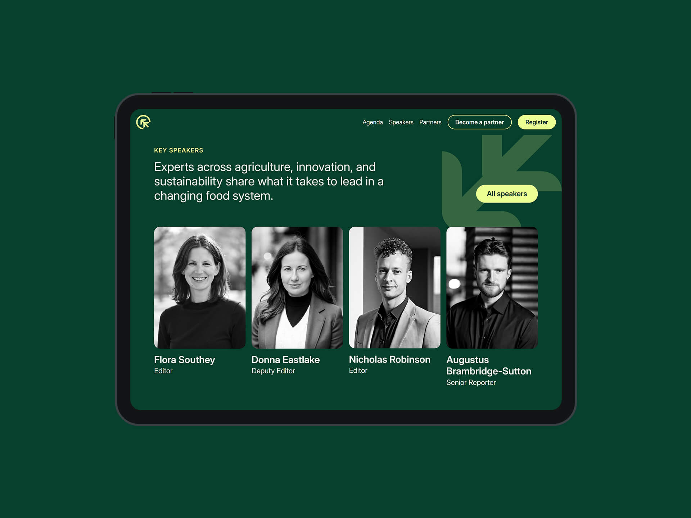

The Challenge
The existing branding looked unrefined and inconsistent. The logo lacked structure, didn’t scale across touchpoints, and didn’t reflect the themes of climate, growth, or innovation. On the digital side, the website was copy-heavy, outdated, and difficult to navigate. It failed to convey the calibre of the event or drive meaningful engagement.
Logo ideation
The event team asked for a new visual direction that would reflect the event’s key themes: climate, food, growth, and innovation. I began exploring concepts that would bring these elements together in a simple, scalable icon. Early sketches focused on cyclical forms, food system references, and upward motion to represent both sustainability and progress.
These ideas evolved into three refined logo concepts, each meeting the team’s criteria and offering flexibility across formats.
Brand finalisation
The team selected a concept built around a circular symbol that subtly forms a "C" in the negative space. At the centre of the mark is a stylised plant, designed with upward-pointing arrows to represent growth, tech, and future-focused thinking. The final logo balanced meaning with simplicity and served as the foundation for a broader visual identity system.
Website design and development
Once the branding was approved, I redesigned the event website to bring the new identity to life. The previous site lacked hierarchy, clarity, and visual engagement. Users were overwhelmed by long sections of text and struggled to find relevant information.
I introduced a more modern layout that prioritised structure and simplicity, with clear content sections, refined copy, and high-contrast calls to action that encouraged conversions.

Design decisions were also shaped by the event’s sustainability goals. Images were optimised to reduce page weight and improve performance. Speaker profiles were displayed in greyscale to maintain visual consistency and reduce unnecessary visual noise. Pop-up modals were used to streamline navigation and limit the number of individual pages.
The dark green and off-white palette was selected to align with the event’s climate-conscious message while offering a calm, legible visual experience. While these colours don’t directly reduce emissions on most displays, the design reflects a thoughtful, values-driven approach that reinforces sustainability through tone, clarity, and restraint.
Asset creation
I created a series of digital banners and promotional assets for use across FoodNavigator and AgTechNavigator channels. These were designed for flexibility, clarity, and visual consistency with the new brand.
I also redesigned the email templates to feel cleaner, more engaging, and better aligned with the overall identity, helping to increase open and click-through rates.